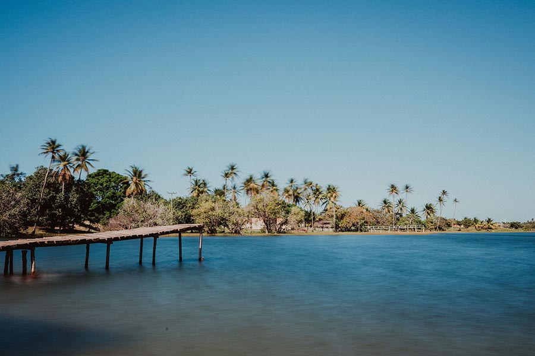
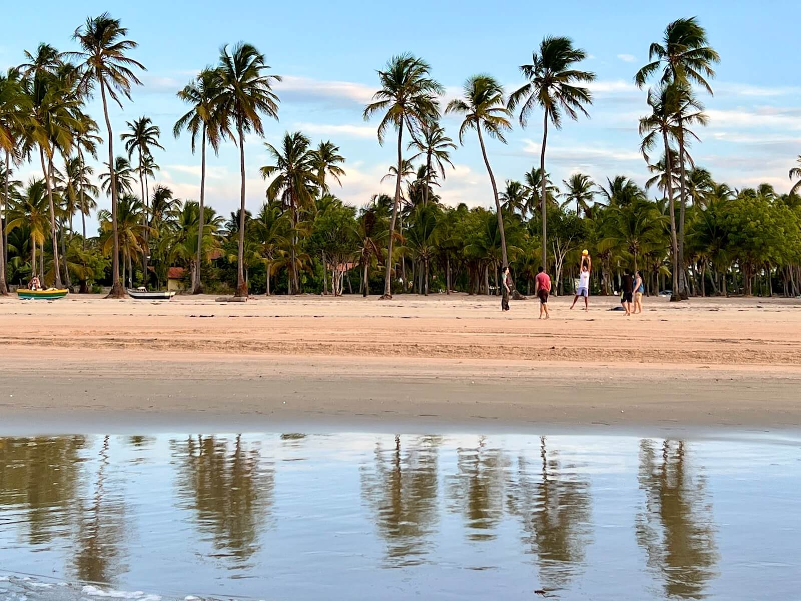
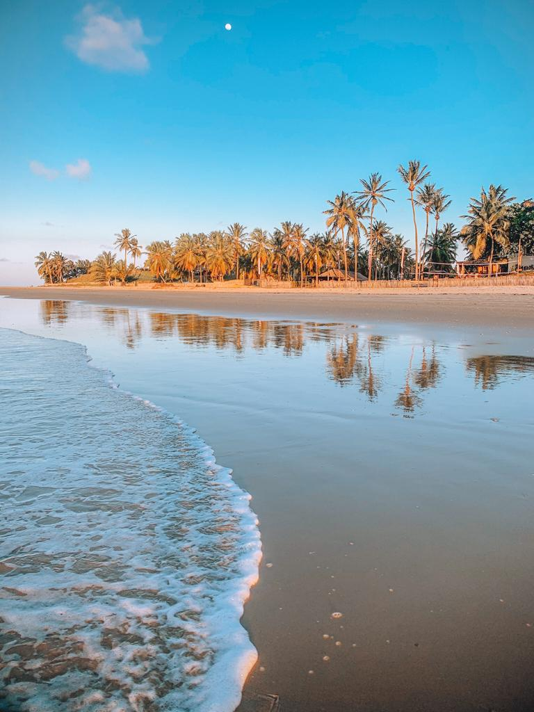
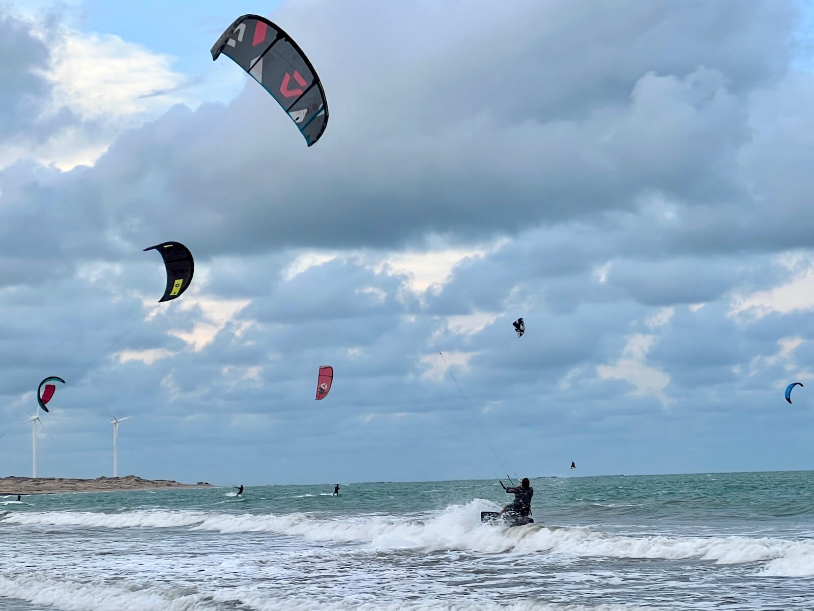

Pontos turísticos e atividades
Aqui vai uma lista do que fazer no Icaraízinho:
- Praia de Icaraí de Amontada: A principal praia da região, ideal para quem quer relaxar, caminhar pela orla e aproveitar a brisa constante. As águas são calmas e perfeitas para nadar.
- Lagoas e dunas: Explore as lagoas e dunas ao redor de Icaraízinho. A Lagoa das Almécegas, por exemplo, é um ponto de parada imperdível.
- Kitesurf e Windsurf: Icaraízinho é um dos melhores lugares para praticar kitesurf e windsurf, graças aos ventos fortes e constantes. Existem várias escolas locais que oferecem aulas para iniciantes e equipamentos para aluguel.
- Mirante do Por do Sol: Aproveite o final do dia em um dos mirantes da região para apreciar o pôr do sol, que pinta o céu com tons de laranja e rosa, criando uma vista inesquecível.
- Povoado de Moitas: Uma vila de pescadores próxima a Icaraízinho, onde você pode conhecer mais sobre a cultura local, provar pratos típicos e apreciar a simplicidade do lugar.



